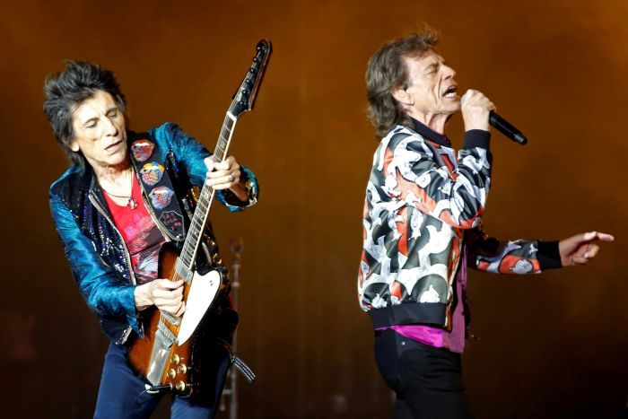

Mick Jagger 'on the mend' following reported heart surgery that postponed Rolling Stones tour

Rolling Stones frontman Mick Jagger says he is "on the mend" after undergoing surgery that caused the postponement of the band's planned North American tour.
The 75-year-old British singer underwent heart valve replacement surgery in New York earlier this week, according to media reports.
Jagger and his representatives did not provide details of the surgery but said it had gone well.
"I'm feeling much better now and on the mend — and also a huge thank you to all the hospital staff for doing a superb job."
His United States publicist said the treatment had been successful and that Jagger was expected to make a full recovery.
His need for surgery forced the Rolling Stones last weekend to postpone the entire North American tour that had been due to start later this month.
Billboard magazine, citing unidentified sources, said the surgery involved the replacement of a heart valve by going through Jagger's femoral artery.
The procedure, known as transcatheter aortic valve replacement, or TAVR, is an increasingly widely-used alternative to surgical valve replacement that requires the chest to be opened.
TAVR typically allows for shorter hospital stays and quicker recovery times.
Last week Jagger apologised to fans for postponing the tour, tweeting that he was "devastated".
The Rolling Stones tour is now expected to begin in July, Billboard said.